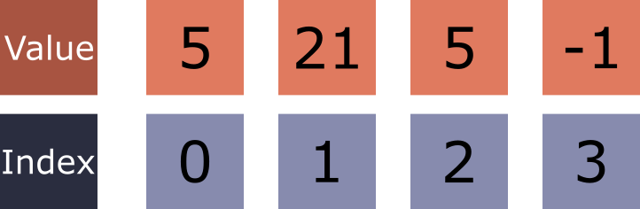
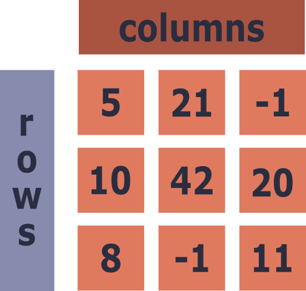
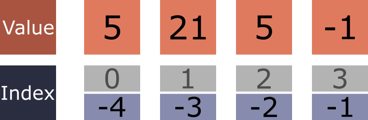
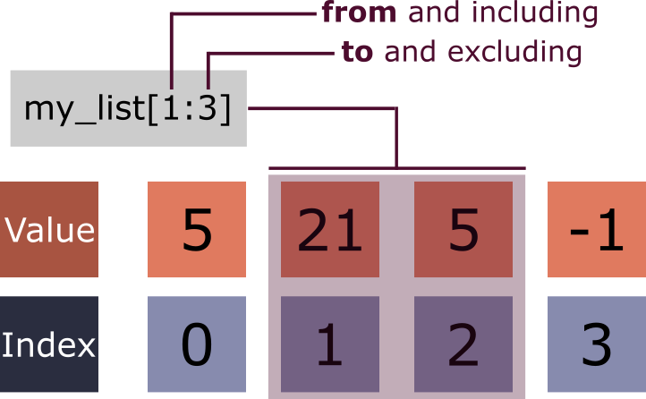

Learning Objectives
Introduction
At the core of all data driven packages in Python will be NumPy (numerical Python). It is the universal standard for working with numerical data in Python due to its ubiquity in many third-party scientific packages. It is essential to master the basics of its structure and methods, to then use more specialised packages in your research computing journey.
This section will walk you through these basics, and as we progress through the subsequent modules you will find yourself implementing them frequently as well as learning new NumPy based tools that fit the specific workflows and fields we will cover.
The NumPy library is optimised to interface and use the coding language C / C++, which is much more efficient than Python (which can be quite slow compared to its peers). This means we can perform rapid mathematical operations on our data, whilst retaining the readability and flexibility of Python.
Why are lists not enough?
The core structure of the NumPy package is the NumPy array, which is a collection of homogeneous (all one type), numerical elements. The array in its simplest form is 1-dimensional, although it is often multidimensional in the form of a matrix (nested arrays of all the same size). In fact, it can never be a jagged, nested array, unlike a list.
From this description, NumPy seems like a more restrictive version of a Python list, which begs the question "what does NumPy do better?". This is best explored through some demonstrative code:
One key limitation of a list is that mathematical operators do not act on the elements within, but on the list as a whole.
Using the multiplication operator ($*$) causes the list to be repeated as many times as the value after the operator. This behaviour is useful in certain software situations, but typically for data science when we multiply, add, or divide we want that action to occur element-wise, not object-wise.
To achieve this using lists we would need to employ a for loop:
This achieves our goal, however there are two key problems:
1. For loops are slow. If the list were thousands of elements long, each operation would begin to stack up.
2. It is cumbersome to write out a unique for loop for each operation.
Try running the cell below as it is, which is quite rapid. However, try making the list 10000000 times bigger rather than 10, how much slower is it then?
Performing several million operations is not uncommon, especially when you have large tabular datasets, so it is imperative to use a more efficient system.
The time package is a built-in module for Python. It comes in very handy for measuring how long your code takes, which can then be used to further optimise it.
With NumPy
Now lets solve the problem using NumPy, which means we need to load the NumPy library into our workspace:
The NumPy functions are nearly always imported with the alias np. This is due to the fact we will be using many functions from the library, so reducing the namespace to fewer letters is beneficial.
The alias can be any string you like, however it is useful to use a standard alias for ease of sharing your code with others or when working with an LLM (genAI) tool.
First we need to cast the list into a NumPy array. To do so simply call the function np.array() with the argument being the variable name for a list or a list itself.
Now, rather than calling a for loop, each element can be multiplied by 2 in one line of code:
This solution is both more elegant than a for loop, and also consumes less memory as NumPy is more efficient with how it stores data. This allows us, as the user, to scale our data science needs to large tracts of data without longer wait times or more computational memory.
The application of an operation over an entire array without using an explicit loop is called vectorisation and can be utilised by any of the mathematical operators, NumPy functions, and custom functions. These will be explored further along in the next section.
Let's compare the time NumPy takes with our previous for loop:
When you run this with a list of 40,000,000 elements, NumPy is almost 2 times quicker, and that is on one of the easiest tasks for a for loop.
From this alone, it can be seen that NumPy is a better tool for working with numerical data, and that is before we explore the additional functions and methods.
Creating an array
Now that we are acquainted with the use case of NumPy, we can look at the basics of the NumPy array.
At the core of NumPy is the array, a structure for storing, retrieving, and manipulating data. Think of it as a list, a sequence of elements, one that is specialised for numerical data.

A NumPy array is created by converting either a list or a tuple using the NumPy function array:
NumPy arrays should be homogeneous (all one type of data), either an integer or a float. When you convert your list to a NumPy array it will infer from the elements within what data type or dtype they are automatically. This can be viewed using the .dtype attribute:
All data structures in Python have attributes and methods attached to them. These are accessed by the . notation after the variable name. When an attribute you just give its name, when a method it is the name followed by (), just like a function.
Integer: A whole number with no decimal component (e.g. -3, 0, 42).
Float: A number that represents a fractional value using a decimal point (e.g. 3.14, -0.5).
It may seem inconsequential whether the data is a float or an integer, however some third party functions will be explicitly expecting an integer or float and will throw an error when they do not.
Only when all of the elements in an array are integers will the dtype of the array be int. When, even a singular float is present the whole array will be converted to a float type.
This can be reversed by insisting on the dtype of the array, either on creation or afterwards:
At creation
After creation
The .astype() method is useful for ensuring arrays returned to you are of the type you need for subsequent workflows.
You may have noticed the number 64 after either float or int. This stands for the number of bits the number occupies, determining how long it can be. You are unlikely to need to understand this concept fully, however for those who do we cover this in more detail in the bonus material at the end of this lesson.
Non-numerical Numpy
As with a float, if there was a string inside a newly created NumPy array it will become an array with a dtype of <U32. This is a unicode dtype.
It is not recommended to use NumPy for strings as its functionality is for numerical data. However, there may be times when an experimental reading is imported as a string, messing up your newly created array.
2.
Convert the data given into a NumPy array.
The data is currently stored as integers, however, they need to be converted to floats. Use one of the two methods to achieve this goal.
Shape
For the standard data structures in Python we use the len() function to obtain the number of elements inside, which works for NumPy arrays too:
However, the NumPy way of obtaining this information is the .shape attribute, which returns a tuple:
Attribute: A named property belonging to an object that stores information about it. Unlike a method it does not need () after the attribute name as no function is being invoked.
Attributes describe the object, rather than perform an action.
The reason we use .shape rather than len() is because we are typically working with multi-dimensional arrays rather than 1D ones. Since NumPy requires all sub-arrays to be the same length (non-jagged), the result is a matrix.
A matrix is a tabular data structure where position is meaningful in both directions. For example, each row might represent an experimental repeat, and each column a different specimen or condition. This means there is a relationship between elements within a row (across columns) and between elements across rows (down columns). See the diagram below for a visual explanation of the structure:

Now that we have a 2-dimensional array, we can see the length of the array has been moved to the 2nd element in the shape tuple, with the first element describing the number of nested arrays inside. From here on, we will work with matrices rather than 1-dimensional arrays.
Attempting to convert a jagged nested list to a NumPy array will throw a ValueError. Run the cell below to see:
3.
Programmatically calculate the total number of elements within the matrix that was created above.
Hint: Use the tuple from .shape
NumPy indexing
Indexing a NumPy array is exactly the same as indexing a list. The first element is index 0 with subsequent elements increasing by 1.
Likewise negative indexing can be used to obtain the last elements more easily:

Extending this to multi-dimensional arrays is simply a case of knowing the order of access. Let's take the matrix we made before, viewing it both as a whole and its shape:
The shape contains:
- The first element is the number of arrays within
- The second element is the length of the nested arrays
[].
Have a practise with the matrix in the cell below:
NumPy slicing
The same understanding can be extended from list slicing to arrays. Remember with slicing the first number is inclusive and the second number after the colon is exclusive:

If you are using either 0 or -1 to slice from the beginning or end respectively, then they can be omitted and it will still work.
See below:
Slicing a matrix
Slicing a matrix is approached in much of the same way as indexing, a single set of square brackets [] with the first item being the slice for the rows and the second for the elements within each row. With matrix slicing we can isolate internal fragments of multiple arrays.
The slice below: takes only the last three elements from the second and third arrays.
Likewise we can combine slicing with indexing to retrieve all the elements that sit in the fourth position by not giving any restrictions to the first slice:
4.
Complete the following with the matrix given below:
- Retrieve the value
88 - Retrieve the entire third row
- Retrieve the last column
- Slice out the top-right 2×3 submatrix (rows 0–1, columns 2–4)
Chaining indexing / slicing
The above methodology indexes or slices the array using a singular index bracket, which is the go to method for isolating sub-sets of data. An alternative method is to chain together singular indexing/slicing, one after the other. Here we need to think in terms of executing in sequence from left to right.
We can now add a new indexing bracket after writing the first:
And so on...
This process highlights how the process is a chaining of actions with the leftmost happening first, with its result passed to the next action in the chain. Whilst the first method is the go-to, this alternative method may make more sense to others.
It's not only indexing/slicing that can be chained; any action that returns an object can be chained. Something we will encounter multiple times along our data processing journey.
Filtering
Another powerful tool of NumPy arrays is the ease at which you can filter them for elements that meet a specific condition.
For example, below, we can select only the elements that are less than or equal to 6:
Here, the conditional statement, filter_array <= 6 creates an array of boolean values that match the shape of the array. These values, where True, tell the indexer which of the elements to extract.
This concept is called boolean masking. Think of it as placing a mask on top of the array, which where True, you can see the elements.
Conditional statements can be combined to generate more complex conditions. To combine we use the AND (&) or OR (|) operators, with each condition inside its own rounded bracket.
AND (&) operator: Returns True only when both conditions are True. Used in boolean masking to combine multiple conditions where all must be satisfied simultaneously.
OR (|) operator: Returns True when at least one condition is True. Used in boolean masking to combine multiple conditions where any one being satisfied is sufficient.
Look at the conditional statement below, what do you think the returned values will be?
The second conditional is a bit more tricky, the operator is a modulus operation.
5.
Complete the following with the matrix given below:
- Create just the boolean mask for all values greater than 50
- Use that mask to retrieve those values as a 1D array
- Create a mask for values that are both greater than 20 and less than 60
- Use the resultant filtered array to count how many values this applies to
Masking to replace values:
An advanced use of masking is to use the boolean array to replace or update a specific set of values in the original array.
For example, below is some dummy data that mimics a set of fluorescent plate readings:
In a hypothetical scenario it is known from experience that those with fluorescence below 100 have failed and we want to alter them so that they are excluded from the analysis. To do so we can apply a boolean mask for all values equal to or below 100:
This can then be placed on the original combined with an = to assign a new value. Here we will make them all 0:
Subsequent analysis can then flag any values that are 0 as a fail, preventing them from warping analysis but still keeping that information for other uses. e.g. the failure rate across all experiments or machines.
Rather than zeros, a more Pythonic value to use would be NaN values, which stand for "Not a Number". This value is a special type of float, so even though it looks like a string it is treated as a numerical value. As a float type, it will change the array dtype to float.
A NaN value can be called from NumPy with np.nan:
The benefit of NaN values is that most plotting functions will treat them as they are not there, allowing you to maintain the structure without altering analysis. However, they can cause an error for some analytical functions.
6.
You have been given a nested list of fluorescence readings from a plate-based experiment. The values have been imported with their units attached, making them strings rather than numbers.
Write a workflow that:
- Strips the units from each value in each sub-list
- Use a for loop and append the cleaned sub-list to an empty list
- Convert the cleaned nested list to a NumPy matrix, ensuring the dtype is float
- Create 3 boolean masks to bin the readings into categories:
- High: values greater than or equal to 140
- Medium: values greater than 120 and less than 140
- Low: values less than or equal to 120
- Use the masks to replace the original values with the bin midpoint — 140.0, 130.0, and 120.0 respectively
Summary & Quiz
NumPy is a core data science package, so it is worth getting to know all the ways of interacting with its arrays. In the next section we will go through the ins and outs of NumPy operations, as well as the common functions and methods within NumPy.
Summary & Quiz
Attempt the questions below once you have finished. If you get any wrong, head back to that section to remind yourself of the reasoning/syntax behind the correct answer:
Why is applying an operation to a whole NumPy array preferable to looping over a list?
A list contains [5.0, 21, 5, -1]. What dtype will the resulting NumPy array have?
Which method converts an existing array to a different dtype?
For a matrix, what does the `.shape` attribute return?
In the slice `array[2:7]`, which indices are included?
What does the expression `filter_array[filter_array <= 6]` rely on?